Investigación forense y compliance
Encontramos la causa raíz con evidencia sólida y total confidencialidad.
Organizaciones líderes confían en nuestro criterio


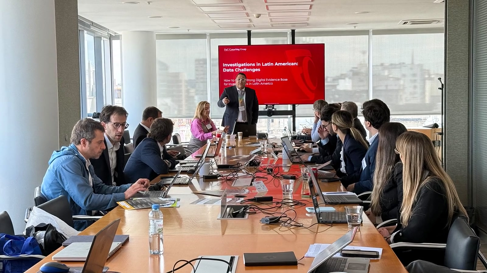
Una firma, todos tus riesgos
Investigación, prevención y cumplimiento bajo un mismo método: lo que aprendemos en cada caso fortalece tu programa de compliance.
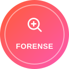
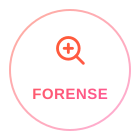
Investigaciones
Encuentra la causa raíz de fraudes, denuncias y litigios.
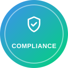
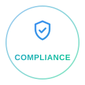
Compliance
Programas basados en riesgos, hasta la certificación ISO.
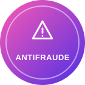
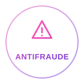
Antifraude
Previene, detecta y corrige irregularidades antes de la crisis.
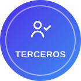
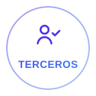
Background check
Valida antecedentes de terceros antes de cerrar una alianza.
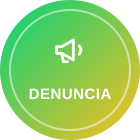
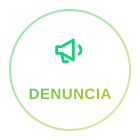
Línea ética
Gestiona denuncias internas con protocolos de confidencialidad.
F&C Academy
Certificaciones PECB y cursos en vivo para tu equipo.
Los especialistas que investigan por ti
Decisiones con evidencia, no con sospechas
F&C llegó a la causa raíz de una denuncia interna en semanas, con evidencia preservada y un informe listo para el consejo.
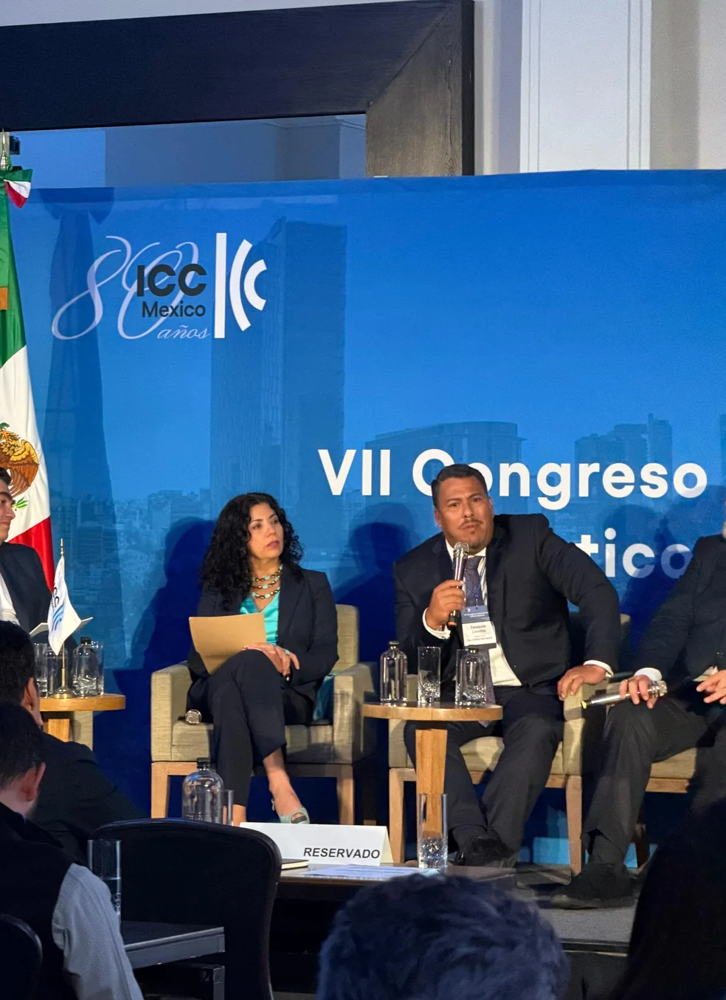
Pasamos de un programa de cumplimiento de papel a un sistema trazable y auditable, listo para la certificación ISO 37301.
El background check nos dio la tranquilidad de cerrar una alianza sabiendo con quién tratábamos.
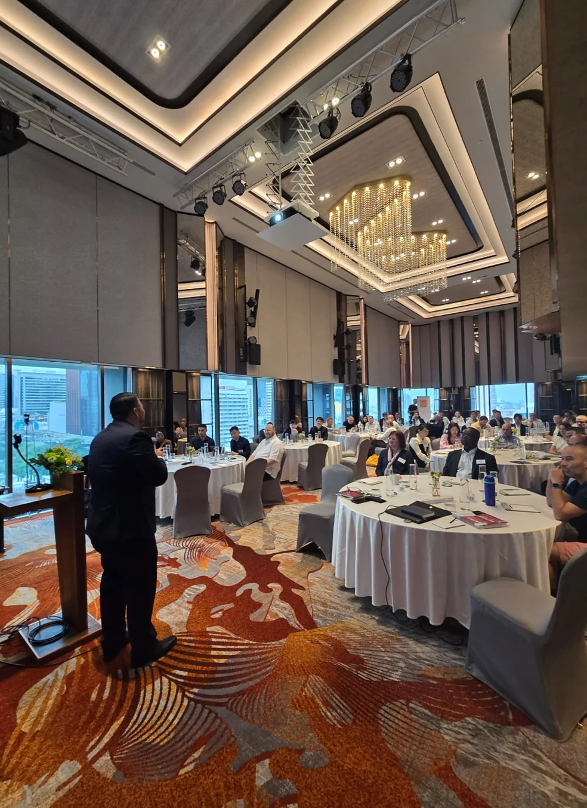
Con F&C Academy nuestro equipo aprendió a investigar denuncias con método, plazos claros y total confidencialidad para quien reporta.
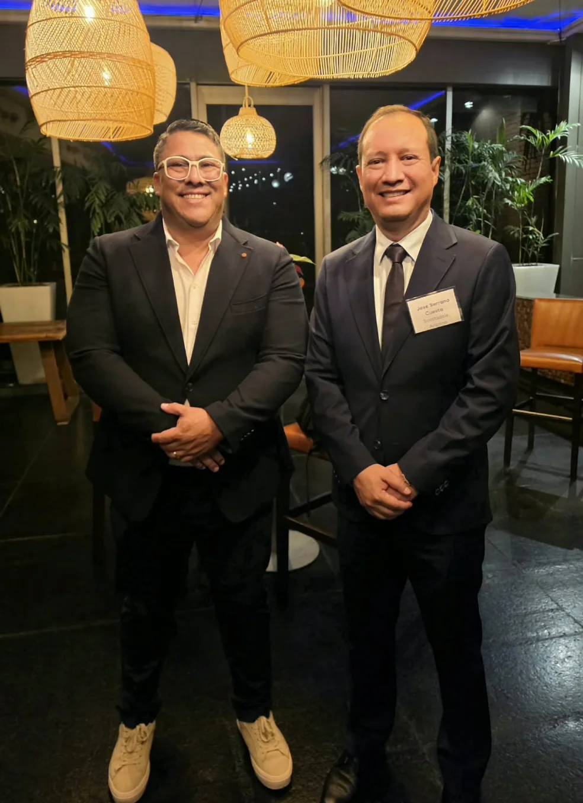
Método forense, 5 pasos
Entendimiento, preservación, análisis, validación e informe ejecutivo.
Conoce el método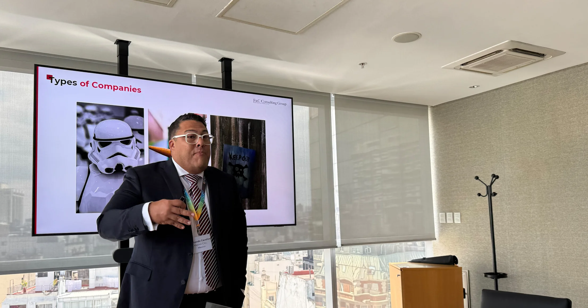
Método forense 5 pasos
Análisis experto
Ver todos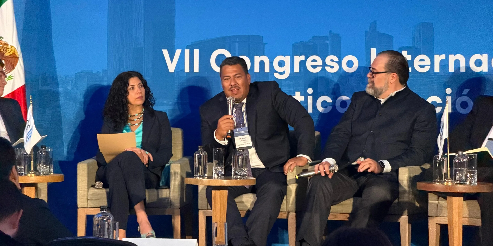
Donde habla la evidencia
Desde la primera sesión estratégica hasta el informe ejecutivo, con total confidencialidad.
Preguntas frecuentes
¿Por qué contratar una firma externa para investigar?
Porque una investigación interna suele perder independencia: quien investiga reporta a quien podría estar involucrado. Una firma externa aporta metodología forense, preserva la evidencia desde el primer día y entrega hallazgos que se sostienen ante el consejo, una autoridad o un juez.
¿Cómo protegen la confidencialidad del caso?
Trabajamos bajo acuerdos de confidencialidad, con un equipo reducido y acceso controlado a la información. La evidencia se preserva con cadena de custodia y solo se comparte con quien tú designes.
¿Pueden apoyar a nuestros abogados en un litigio?
Sí. Trabajamos junto a abogados internos y externos: preservamos y analizamos la evidencia, documentamos el método y, cuando el caso lo requiere, entregamos peritaje contable o tecnológico.
¿Qué tipo de casos investigan?
Fraude interno, robo de activos e información, conflictos de interés, violaciones al código de ética por empleados o terceros, incumplimientos normativos, ciberataques y denuncias de acoso laboral o sexual.
¿Qué recibo al final de la investigación?
Un informe ejecutivo con hallazgos, evidencia, causa raíz y recomendaciones para minimizar riesgos financieros, operativos, legales, regulatorios y reputacionales.
¿Qué es un programa de compliance basado en riesgos?
Es un programa que parte de identificar los riesgos reales de tu operación (corrupción, fraude, lavado, terceros, datos) y diseña controles, políticas y auditorías proporcionales a esos riesgos, en lugar de copiar un manual genérico.
¿Nos ayudan a certificarnos en ISO 37001 o ISO 37301?
Sí. Hacemos el análisis de brecha, implementamos el sistema de gestión, realizamos la auditoría interna y te preparamos para la auditoría de certificación con un organismo acreditado.
¿Cómo empieza un programa antifraude?
Con un mapeo de procesos y riesgos para detectar dónde puede ocurrir el fraude. Después definimos controles para prevenir, detectar y corregir, y un plan de monitoreo continuo.
¿Ofrecen una autoevaluación gratuita?
Sí. Puedes responder la autoevaluación ISO 37001 de Sistema de Gestión Antisoborno y el toolkit de compliance anticorrupción y antifraude, de forma totalmente confidencial.
¿Qué certificaciones ofrece F&C Academy?
Somos representantes académicos de PECB (Canadá) en Latinoamérica. Ofrecemos Implementador Líder y Auditor Líder en ISO 37001, ISO 37301, ISO 27001 e ISO 42001, entre otras.
¿Cómo son las clases?
En vivo y virtuales, de 17:00 a 20:00 hora de la Ciudad de México. Las certificaciones duran 24 horas en 8 sesiones y los cursos cortos 6 horas en 2 sesiones.
¿El precio incluye el examen?
En las certificaciones PECB sí: incluye material oficial, preguntas de estudio, costo de examen y certificación, y una oportunidad adicional de examen.
¿Pueden capacitar a todo mi equipo?
Sí. Diseñamos programas in-company para equipos de compliance, auditoría, RH y alta dirección, además de cursos abiertos y e-learnings.